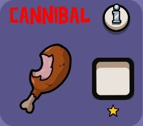

Classes Más
Assasino

Você pode investigar os jogadores para ver se eles estão corrompidos. Os patos parecerão corrompidos.
Canibal
Você está imune aos efeitos da corrupção.
Demolidor

Você pode matar uma vez sempre que for corrompido.
Ninja

Como um ganso, você permanece vivo com seu parceiro, que será um pato que você precisa proteger. Se um morrer, o outro também morre.
Drone

Pode matar escravos e deve eliminar o monstro disfarçado para vencer. Você também pode sobreviver quando o tempo acabar para vencer.
Telepato

Você pode investigar os jogadores para ver se eles estão corrompidos. Os patos parecerão corrompidos.
Grande Sacerdote

Você está imune aos efeitos da corrupção.
Hitman

Você pode matar uma vez sempre que for corrompido.
ladrão de indentidade

Como um ganso, você permanece vivo com seu parceiro, que será um pato que você precisa proteger. Se um morrer, o outro também morre.
Invisivel
Pode matar escravos e deve eliminar o monstro disfarçado para vencer. Você também pode sobreviver quando o tempo acabar para vencer.
Metamorpho

Você pode investigar os jogadores para ver se eles estão corrompidos. Os patos parecerão corrompidos.
Festeiro

Você está imune aos efeitos da corrupção.
Proficional

Você pode matar uma vez sempre que for corrompido.
Serial Killer

Como um ganso, você permanece vivo com seu parceiro, que será um pato que você precisa proteger. Se um morrer, o outro também morre.
Apanhou ficou calado

Pode matar escravos e deve eliminar o monstro disfarçado para vencer. Você também pode sobreviver quando o tempo acabar para vencer.
Espião

Você pode investigar os jogadores para ver se eles estão corrompidos. Os patos parecerão corrompidos.
Trollante

Você está imune aos efeitos da corrupção.
Carregador de corpos

Você pode matar uma vez sempre que for corrompido.